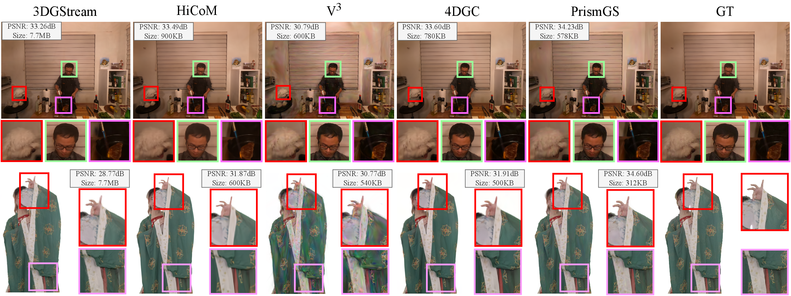

PrismGS: Coordinated Training and Compression for Pareto-Optimal 4D Gaussian Streaming
Shanghai Jiao Tong University
ACM MM 2026
TL;DR
PrismGS performs attribute-aware coordinated compression for dynamic 4D Gaussian streaming, achieving stronger quality-bandwidth tradeoffs than uniform compression under changing network conditions.
Abstract
Dynamic 4D Gaussian scene streaming requires balancing visual quality, storage cost, and transmission bandwidth under rapidly changing network conditions. PrismGS addresses this problem with a coordinated training-and-compression pipeline that models the rate-distortion behavior of different Gaussian attribute groups and selects Pareto-optimal compression configurations for streaming. Instead of relying on a single uniform compression level, PrismGS performs attribute-aware allocation across geometry- and appearance-related components, enabling more effective bitrate use under bandwidth constraints.
Demo Video
Evaluation Comparison
We provide a compact comparison figure summarizing the main experimental evaluation of PrismGS against representative baselines under bandwidth-adaptive streaming settings.
